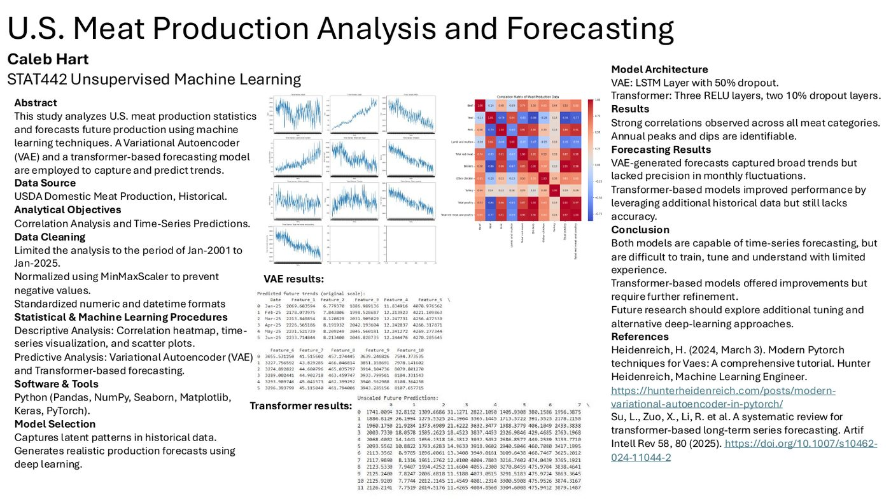

Forecasting
Forecasting a year of USDA meat and poultry production
For my Statistical Machine Learning II final project at Oregon Tech (STAT442, Winter 2025), I took on USDA meat and poultry production statistics. It's a great forecasting dataset because it's long and seasonal, and the seasons are correlated across products. Production of one thing moves with the calendar, and often with production of the others.
The goal was simple to say and harder to do: forecast production as far ahead as possible, and figure out which kind of model actually earns its complexity.
The data
The source is the USDA's historical meat statistics table, which catalogs U.S. meat production by month all the way back to 1921. The variables are beef, veal, pork, lamb and mutton, total red meat, broilers, other chicken, turkey, total poultry, and total red meat and poultry, all in millions of pounds.
Cleaning was its own project. For the first model I cropped the data to January 2001 through December 2024, the span with no missing values. Then I stripped the commas out of every number (an Excel moment), cast everything to numeric, and normalized with a MinMaxScaler so nothing went negative. For the second model I went back further, to 1977, keeping only federally inspected meat so I could use the longest clean history.
Model one: a variational autoencoder
My first approach was a variational autoencoder (VAE) built in PyTorch. An LSTM encoder squeezes each window of history into a 20-dimensional latent space, and an LSTM decoder turns samples from that space back into the next 12 months of production. The appeal is that a VAE learns the shape of the data and can generate realistic new sequences from it.
It trained for 20 epochs, with the test loss falling from 6.76 to about 2.5. The forecasts captured the broad trends, but they weren't sensitive enough to the month-to-month swings. My honest takeaway from the write-up still stands: VAEs are very finicky, and getting them accurate takes a lot of trial and error.
Model two: a transformer, plus anomaly detection
So I built a transformer-based forecaster next, trained on the longer 1977–2025 history, along with an anomaly detection pass over the data. Over about two hours of training, the pipeline flagged 1.2% of the data as outliers, and the models produced forecasts up to one year in advance. The transformer improved on the VAE by using the extra history, though there's still accuracy left on the table.
I automated the data pipelines in Python so re-running experiments stayed cheap, which mattered a lot with models this fiddly.

What I learned
Every meat category is strongly correlated with the others, which makes sense since production follows national trends. The annual peaks and dips are easy to see, and so is the long decline in some categories. Both deep models can forecast a time series, but they're hard to train, tune and understand. Next time I'd spend more time on hyperparameter tuning and compare against simpler baselines.
Project files
At a glance
- Course: STAT442, Oregon Institute of Technology
- When: Winter 2025
- Models: Variational autoencoder (LSTM encoder and decoder), transformer-based forecaster
- Tools: Python, pandas, NumPy, PyTorch, Keras, seaborn, Matplotlib
- Results: Forecasts up to 1 year ahead; 1.2% of the data flagged as outliers; about 2 hours of training